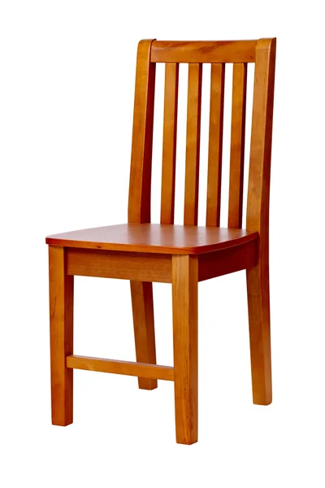
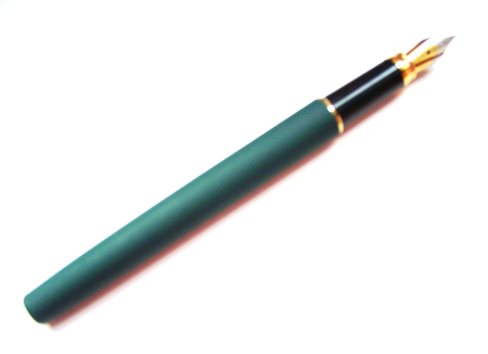

Case study between Google Lens and Mobilenet
GOOGLE google_lens
VS
Mobilenet
-
Test Image -

-
Test Image -

- Test Image - 
-
Test Image -

-
Test Image -

- Test Image - 
- Test Image -
-
Test Image -

Output on GOOGLE LENS - Apple
Output on Modilenet Model - Telivision, computer mic, toy
Result - Google Lens Is More Accurate
Output on GOOGLE LENS - Banana
Output on Modilenet Model - computer mouse
Result - GOOGLE Lens Is More Accurate
Output on GOOGLE LENS - Chair
Output on Modilenet Model - Seat, Chair
Result - Both are Accurate
Output on GOOGLE LENS - Grapes
Output on Modilenet Model - Wall hanging, fruit
Result - Google Lens Is More Accurate
Output on GOOGLE LENS - Mobile
Output on Modilenet Model - Remote Control, Phone
Result - Both are Accurate
Output on GOOGLE LENS - Pen
Output on Modilenet Model - Stick
Result - Google Lens is more Accurate
Output on GOOGLE LENS - Pencil
Output on Modilenet Model - Pen
Result - Google Lens Is more Accurate
Output on GOOGLE LENS - Watch
Output on Modilenet Model - CLock
Result - Google Lens Is more Accurate
I have tested 8 images
Google lens have predicted all of them accurately and Mobilenet was less accurately
So according to my case study Google lens is more Accurate